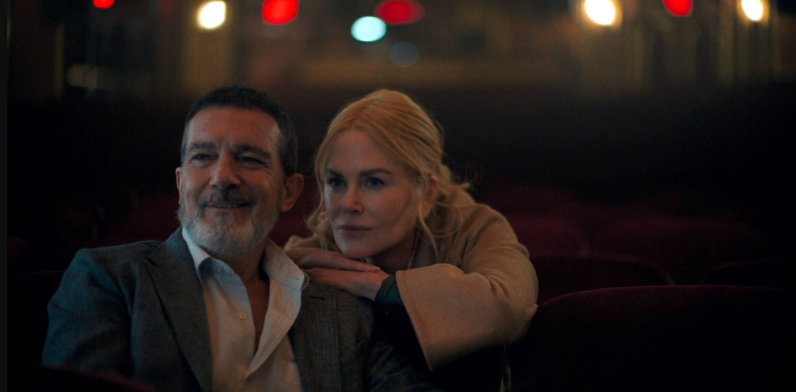
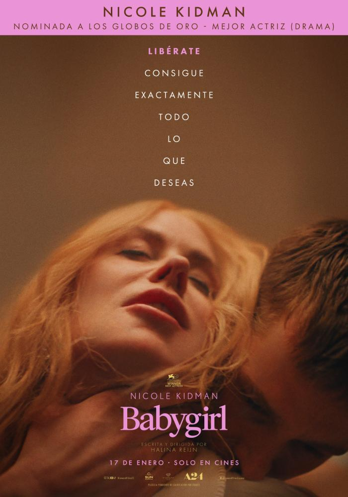

Babygirl, lo que ha Gaspar Noé le gustaría ser
Un retrato honesto y conmovedor de la juventud
Babygirl, dirigida por Macdara Vallely, es una película independiente que aborda los conflictos de la adolescencia, el amor y las dinámicas familiares en el Bronx. Con un tono sincero y una narrativa centrada en las emociones, la cinta ofrece un retrato fresco y genuino de una joven atrapada entre su deseo de proteger a su madre y su propia búsqueda de identidad.
Desde el primer momento, Babygirl nos introduce en el mundo de Lena (Yainis Ynoa), una adolescente que ha asumido una madurez forzada debido a la fragilidad emocional de su madre, Lucy (Rosa Arredondo). La trama gira en torno a la compleja relación entre ambas y el impacto que tiene el ingreso de Victor (Flaco Navaja), un hombre carismático pero problemático, en sus vidas. A través de este triángulo emocional, la película explora temas como la dependencia emocional, la manipulación y la importancia de encontrar la propia voz en un entorno complicado.
Un Antonio Banderas que no destaca pero agrada
El corazón de Babygirl está en las actuaciones. Yainis Ynoa entrega una interpretación llena de matices como Lena. Su actuación capta perfectamente la lucha interna de una joven que intenta equilibrar sus responsabilidades familiares con sus propios sueños y deseos. Ynoa logra transmitir una vulnerabilidad y fortaleza que hacen que su personaje sea profundamente relatable. Por otro lado, Rosa Arredondo como Lucy ofrece una actuación que mezcla ligereza y tragedia. Lucy es una mujer que busca desesperadamente amor y validación, a menudo a costa de su relación con su hija. Arredondo aporta humanidad al papel, evitando que su personaje caiga en caricaturas o estereotipos. Su química con Ynoa es palpable, y juntas crean algunas de las escenas más emotivas de la película.
Flaco Navaja, como Victor, encarna al hombre encantador pero manipulador con una facilidad inquietante. Su presencia en pantalla genera una mezcla de atracción y repulsión, lo que subraya el dilema emocional que enfrentan Lucy y Lena. Aunque Victor podría haber sido un personaje unidimensional, Navaja le da una profundidad que lo hace aún más interesante.
La narrativa de Babygirl no depende de grandes giros argumentales ni momentos melodramáticos. En cambio, se centra en los detalles cotidianos y las pequeñas decisiones que definen las relaciones humanas. Macdara Vallely demuestra un profundo entendimiento de la vida urbana y de los retos que enfrentan las familias monoparentales, especialmente en comunidades de clase trabajadora. La película también destaca por su representación honesta de la adolescencia. Lena no es una heroína idealizada ni una adolescente rebelde estereotípica. Es una joven real, con inseguridades, sueños y una determinación silenciosa. Su arco de crecimiento personal es uno de los puntos más fuertes de la película, ya que vemos cómo aprende a defenderse a sí misma y a establecer límites en sus relaciones.
Babygirl, el nuevo éxito de A24
Babygirl es una película que brilla por su autenticidad y su sensibilidad. Macdara Vallely ofrece un retrato conmovedor y honesto de la adolescencia y las relaciones familiares, respaldado por actuaciones memorables y una dirección visual cuidada. Aunque no es una película perfecta, su enfoque emocional y su compromiso con la verdad la convierten en una obra que resuena mucho después de que los créditos finales hayan terminado.En un panorama cinematográfico saturado de grandes producciones, Babygirl destaca como un recordatorio del poder del cine independiente para capturar las complejidades de la experiencia humana. Es una película que no solo cuenta una historia, sino que también invita al espectador a reflexionar sobre sus propias relaciones y decisiones. En este sentido, Babygirl no es solo una película; es una experiencia emocional que merece ser vista.
Ficha Técnica
- Director: Halina Reijn
- Género: Drama, Erótico
- Estreno: 2024
- Protagonistas: Nicole Kidman, Harris Dickinson, Antonio Banderas
- Duración: 114 minutos